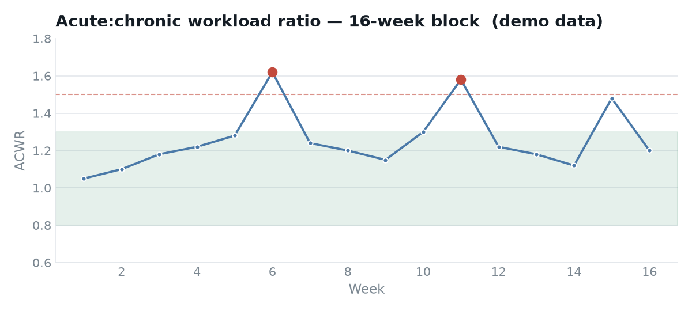

Training Load Monitor — ACWR
A longitudinal injury-risk technique that a single session can’t show: rolling acute-to-chronic workload ratio across a 16-week block, flagging athlete-weeks that spike into the danger zone.
The idea
The acute-to-chronic workload ratio compares how much an athlete has done recently against what they’re conditioned for. Ramp load too fast and injury risk climbs; the widely-used “sweet spot” is 0.8–1.3.
The metric is simple but the value is in doing it continuously, per athlete, across a whole squad — turning daily session loads into an early-warning flag before a spike becomes an injury.
The monitor
Each athlete’s daily load (session RPE × duration) feeds a rolling 7-day acute and 28-day chronic average; their ratio is tracked against the safe band. Any week that pushes above 1.5 is flagged red for review.

What it shows
- Rolling-window feature engineering — acute and chronic loads with correct handling of the ramp-up period.
- Threshold logic & flagging — automatically surfacing the weeks that need a coach’s eyes.
- Squad-scale thinking — the same pipeline runs across 26 athletes, not one.
3 high-risk weeks flagged across the block against a squad mean ACWR of 1.12 — each one a prompt to modify the following week’s plan.